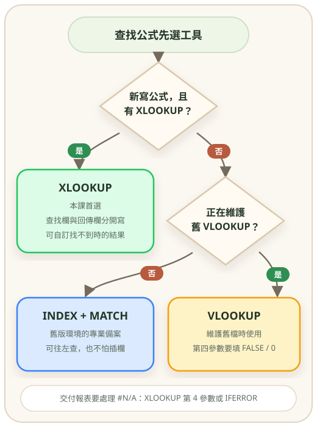
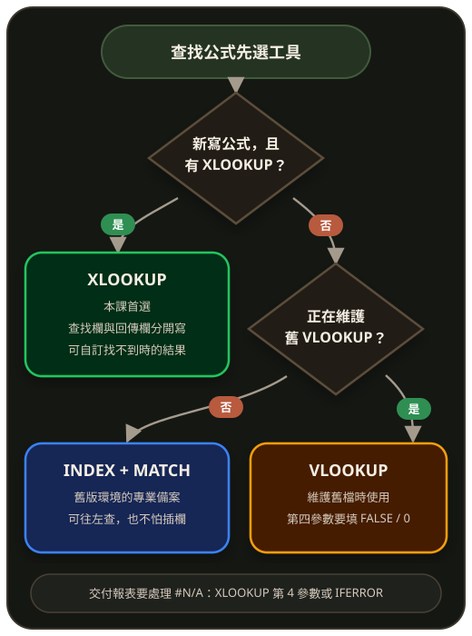

面試最常被問的就是這個。能解釋清楚 VLOOKUP 和 XLOOKUP 的差別，就贏一半。
VLOOKUP 公式拆解動畫
點擊各參數或按「播放」逐步解說
點擊公式中任何參數，或按下方「播放」按鈕
A
B
C
D
E001
王小明
業務
55000
E002
林美玲
行政
42000
E003
張志偉
工程
68000
黃框 = 查找值 (A2=E002)，綠框 = 回傳結果 (第 2 欄=林美玲)
VLOOKUP（舊版王者）
=VLOOKUP(查的值, 查表範圍, 第幾欄, [是否模糊比對])
# 用員工編號查姓名
=VLOOKUP(A2, 員工表!A:D, 2, FALSE)
# ⚠️ 4 個限制：
# 1. 只能往「右邊」查，查左邊要用 INDEX+MATCH
# 2. 第四個參數必填 FALSE（精確比對），否則會出怪結果
# 3. 中間欄位數要手動數，加減欄位就會錯位
# 4. 找不到回傳 #N/A，要包 IFERRORXLOOKUP（M365 新王）
=XLOOKUP(查的值, 查找範圍, 回傳範圍, [找不到回傳], [比對模式], [搜尋方向])
=XLOOKUP(A2, 員工表!A:A, 員工表!B:B, "查無此人")
# ✅ 優點：
# - 可以往任何方向查
# - 內建找不到的處理
# - 不用數欄位
# - 支援由下往上找INDEX + MATCH（萬能組合）
=INDEX(回傳範圍, MATCH(查的值, 查找範圍, 0))
=INDEX(B:B, MATCH("陳小明", A:A, 0))
# 適合舊版 Excel、需要查左邊、雙向查表哪個該用？
M365 / Excel 2021 → 一律用 XLOOKUP；舊版 Office → INDEX+MATCH > VLOOKUP。VLOOKUP 只在維護舊檔案時才碰。


⌨️ 本課常用快捷鍵
WPS Office
本課快捷鍵差異
- 切換絕對/相對參照：Excel 用 ⌘ T，WPS 用 F4
- 陣列公式：Excel 用 ⌘ ⇧ ↩，WPS 用 Ctrl + Shift + Enter
- WPS 也支援 VLOOKUP/XLOOKUP（需 WPS 2022+）